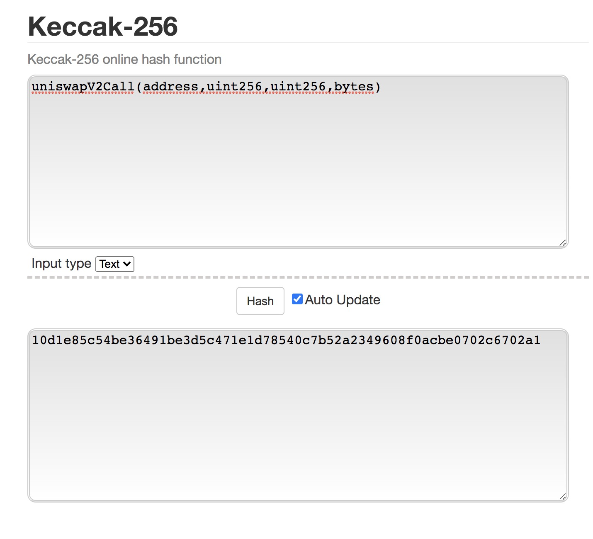
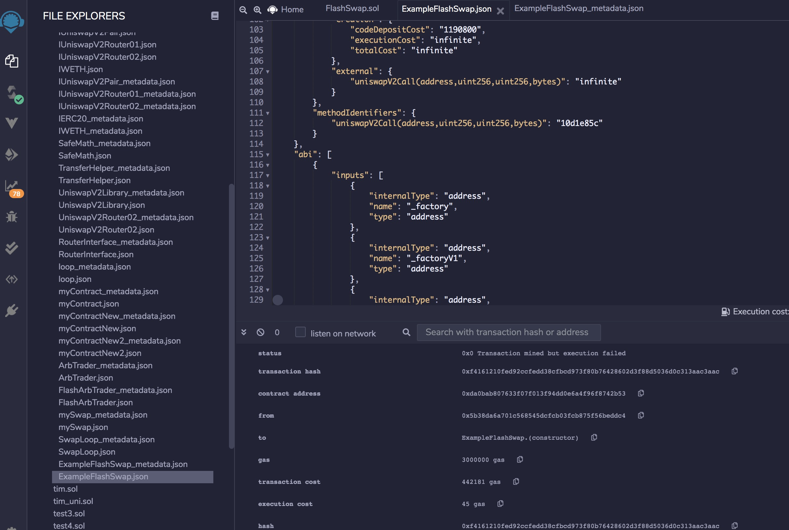

How to find ethereum method identifier in a transaction?
If I want to search transactions that call a specific method based on available code, it is possible using BigQuery and the input field.
The following query can identify all transactions calling the method:
uniswapV2Call(address,uint256,uint256,bytes)
because its code is "0xf19c7fd6".
Finding the method code
write down the function call:
- without "function"
- remove all spaces
- remove variable names and keep only types
- replace uint by uint256
- if arrays, put []
so for example we have the following conversions:
function uniswapV2Call(address sender, uint amount0, uint amount1, bytes calldata data) external override {
becomes:
uniswapV2Call(address,uint256,uint256,bytes)
paste the string into the tool here:
https://emn178.github.io/online-tools/keccak_256.html

Remix helps
Remix can help find the method identifier. After compilation, check the artifacts.

BigQuery code
SELECT * FROM `bigquery-public-data.crypto_ethereum.transactions`
WHERE DATE(block_timestamp) >= "2020-03-05"
and (
STARTS_WITH(input, "0x10d1e85c")
)